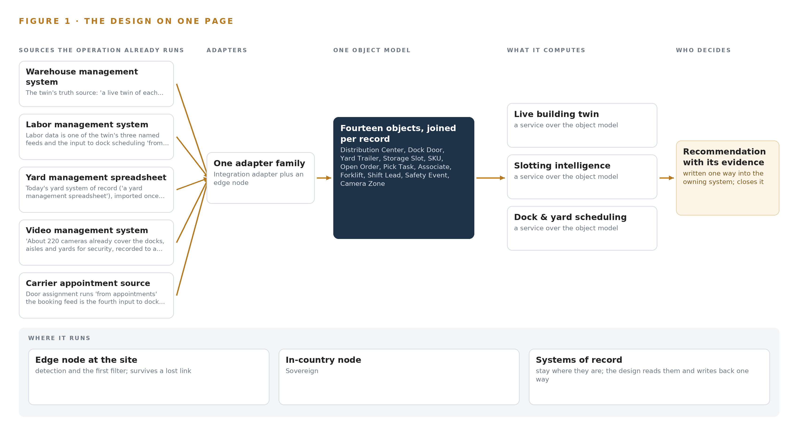
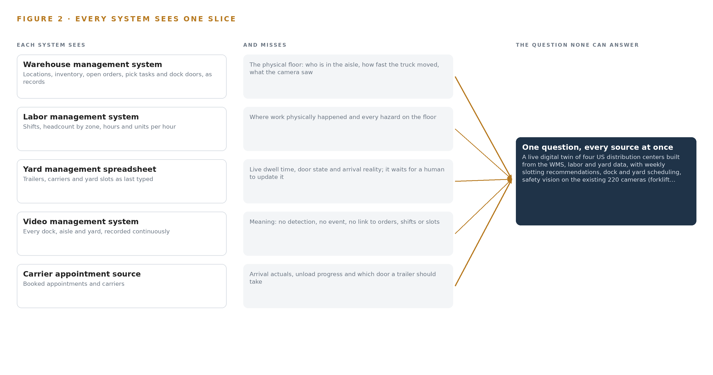
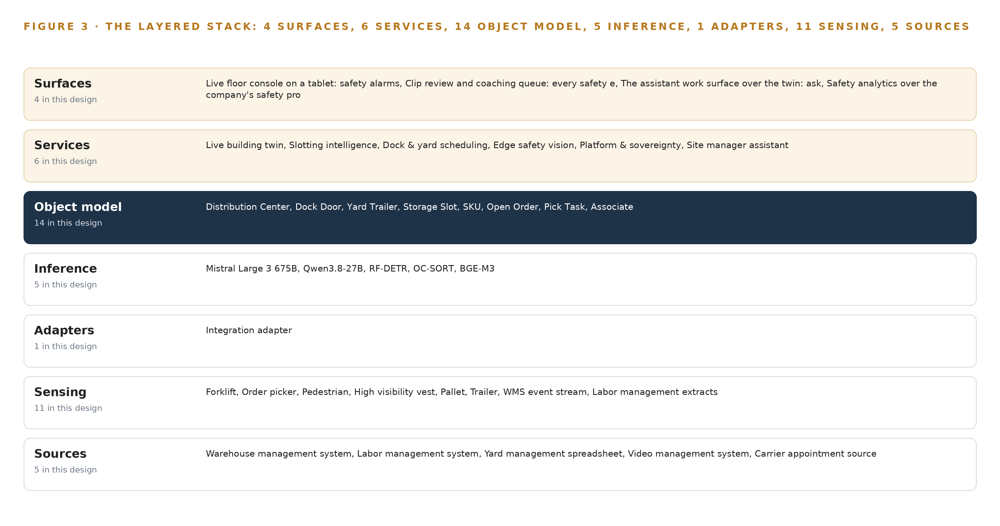
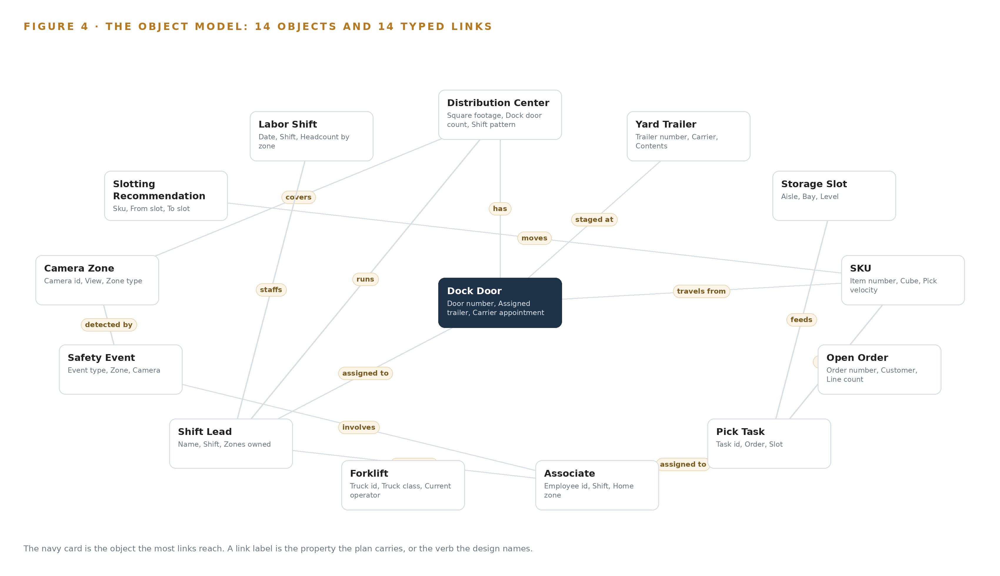
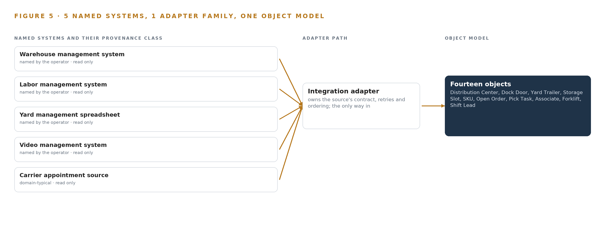
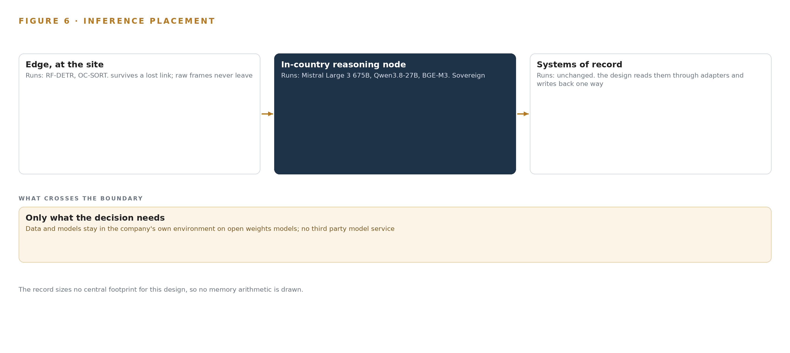
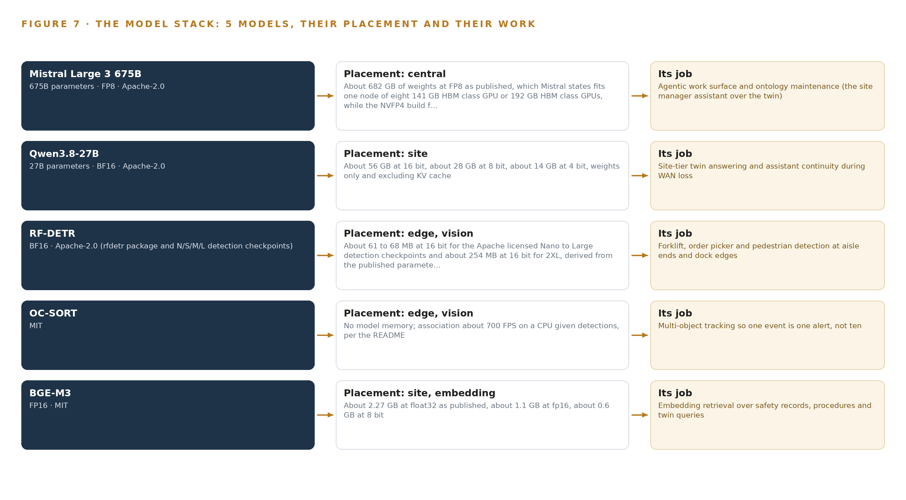
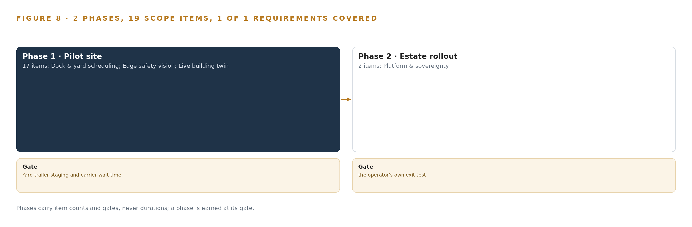
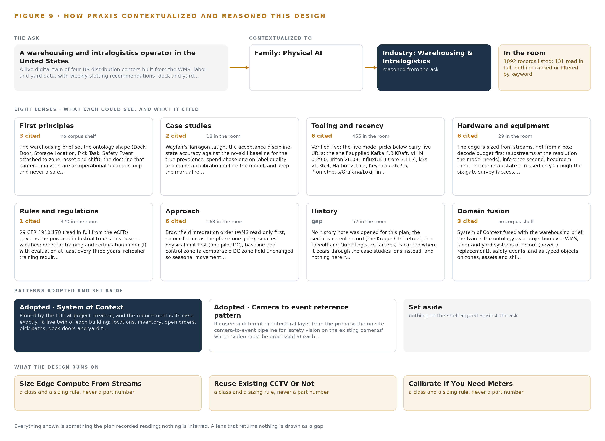

Warehouse Twin Command: Live Slotting, Docks, Yards and Safety Vision for Every Site
A live digital twin of the four United States sites of a warehousing and intralogistics operator, built from warehouse, labor and yard data, that produces weekly slotting recommendations, dock and yard schedules and on-site safety vision, with every action drafted for a person to approve.
For the network operations director, site and safety managers, and the data, platform, ontology and vision engineers who would build and run it.
Vertical-Driven Architectures is a CodeNinja series of system designs. Every design in the series is driven by a real-world problem and scenario in a single industry, and every one is designed on Praxis, CodeNinja's platform for designing physical AI systems. Operations are described by class, never by name.
Warehouse Twin Command: Live Slotting, Docks, Yards and Safety Vision for Warehousing and Intralogistics in the United States
What this is. An open reference architecture for system design in physical AI. A live digital twin of four distribution centers run by a warehousing and intralogistics operator in the United States: one object model projected over the warehouse, labor and yard systems the operation already runs, kept true by nightly reconciliation against the WMS, producing weekly slotting recommendations, dock and yard schedules and on-site safety vision on the existing cameras, with every action drafted for a person to approve. It is written for the network operations director, the site and safety managers, and the data, platform, ontology and vision engineers who would build and run it. The operator is described by class, never by name.
The answer in numbers.
| Part | The design |
|---|---|
| Sources | Five named systems (warehouse management, labor management, the yard spreadsheet, video management and a carrier appointment source), entering through one integration adapter family; only the yard spreadsheet is replaced |
| Object model | 14 typed objects and 14 typed links, from the distribution center, dock door and yard trailer through slot, SKU, order, pick task and associate to the safety event, camera zone and slotting recommendation, published as JSON for reuse |
| Models | Mistral Large 3 675B (Apache-2.0) for the site manager assistant; Qwen3.8-27B (Apache-2.0) for assistant continuity at each site; RF-DETR N to L (Apache-2.0) and OC-SORT (MIT) for safety vision; BGE-M3 (MIT) for retrieval; no face recognition, no re-identification, no training run |
| Compute | At each site, one industrial edge server with one 48 GB PCIe inference card running vision in Triton and the site model under vLLM; centrally, one 141 GB HBM class node of eight cards, on the operator's own hardware |
| Rollout | Two phases carrying 19 scope items: a one-site pilot of 17 items across six workstreams, gated on yard trailer staging and carrier wait time, then 2 items to aggregate and roll out to the remaining three sites |
| Three-year cost | About 597,000 US dollars to own the twelve cards (510,000 to 689,000) before the four edge chassis, which are priced by quotation; renting the same cards in AWS US East runs about 1.86 million on demand and about 699,000 on the deepest three-year commitment (Appendix A) |
| Human control | Every slotting move states walking saved and move labor before a person approves it; every safety event becomes a clip a supervisor reviews, and analytics never act as a safety-rated stop |
Reuse it. The object model, the model register and the figures are free to reuse under CC BY 4.0. Cite the canonical page, https://codeatoms.ai/warehouse-digital-twin-us/, or the DOI on the release.
Made with. Reasoned on [CodeNinja Praxis](https://codeatoms.ai/praxis/), the CodeNinja Atoms platform for designing physical AI systems. The object model imports into [Hyper Ontology](https://codeatoms.ai/hyper-ontology/), which turns it into a living system. Both are in beta; access by request.
A Near Miss Should Be Data, Not Paper
The operation needs one question answered continuously across its four sites in the United States: where every trailer, slot, task and person is right now, and what should change next, from the door a carrier should back into, to the slot a fast-moving SKU should occupy and the walking a move would save, to the forklift and pedestrian near misses that occurred on today's shift and never reached anyone. No system the operation runs can answer it. The warehouse management system holds locations, inventory and pick paths but not labor, carriers or video; the labor system holds hours and rates but not the floor; the yard lives in a spreadsheet that is stale by mid-shift; roughly 220 cameras record for security and no one reviews them; and near misses are captured on paper, if at all. The documented cost of the failure is severe, because forklift and pedestrian incidents in warehousing are frequent and often serious or fatal (Cisco-eagle n.d.; OSHA 2023).
The design builds a live digital twin of each site as a system of context: an ontology of fourteen objects projected over five source systems through one adapter family, kept true by nightly reconciliation against the warehouse management system, which remains the system of record. Six services run on that model, from the live building twin, slotting intelligence and dock and yard scheduling to edge safety vision, platform and sovereignty, and the site manager assistant, and they reach people through four surfaces: a floor console for safety alarms, a clip review and coaching queue, the assistant work surface, and safety analytics. Safety vision processes the existing camera estate at each site on an industrial edge server with one 48 GB inference card, so only events and short clips leave the building, and no face recognition or re-identification runs anywhere. Five open-weight models carry the work: RF-DETR detection and OC-SORT tracking on the site edge GPU, a 27B dense model for assistant continuity when the wide area link drops, an embedding model for retrieval over records and procedures, and a 675B frontier assistant on one node of the company's own hardware, all under Apache-2.0 or MIT terms the operator holds outright.
The paper covers the industry problem and the join failure between existing systems, the constraints that fix where everything runs, the layered stack, the fourteen-object model and its typed links, ingestion through the adapter tier, the placement of inference across the edge, the site and the center, the five models and their licenses, the two-phase rollout with its item counts and exit gates, ownership of what the system builds, and finally how Praxis contextualized and reasoned the design.

Contents
Each chapter is tagged for the reader it serves most directly: Executive, Team Lead, FDE, Reference.
| Abstract · A Near Miss Should Be Data, Not Paper | Executive | |
| PART I · THE PROBLEM | ||
| 1 | A Forklift Near Miss Never Becomes Data | Executive |
| 2 | Every System Sees One Slice of the Building | ExecutiveTeam Lead |
| PART II · THE DESIGN | ||
| 3 | Four Rules Fix Where Everything Runs | Team Lead |
| 4 | One Stack Reaches From Records to the Floor | Team LeadFDE |
| 5 | Fourteen Objects Turn Site Data Into One Argument | FDE |
| 6 | Five Systems Feed the Twin Through One Gate | FDE |
| 7 | Detection Belongs at the Edge and Reasoning in House | FDE |
| 8 | The Licenses Decide What the Operator Owns | FDEExecutive |
| PART III · THE ROLLOUT | ||
| 9 | A Pilot Site Gates Every Wider Rollout | Team LeadExecutive |
| 10 | The Intelligence Stays with the Sites That Produced It | Executive |
| PART IV · HOW IT WAS DESIGNED | ||
| Conclusion · One Twin, Held by the People Who Run the Floors | Executive | |
| 11 | Every Choice Traces Back to Recorded Reading | Team LeadFDE |
| Sources | Reference | |
A Forklift Near Miss Never Becomes Data
Forklift and pedestrian incidents in warehousing are frequent, documented and often serious, yet the operation learns about them from paper after the fact, because no system it runs holds the building together.
The abstract promised a live digital twin of four buildings, built from data the operation already holds, with safety vision on cameras that already exist. This chapter states the question that twin exists to answer, what the absence of an answer costs when forklifts and pedestrians share a floor, and the scenario the design must fit without replacing anything.
1.1 The Question, the Data and the Rules
The question the operation needs answered is a daily one: where in each building is work unsafe or inefficient right now, and what single change this week would improve it. Answering it requires data no one system holds: the locations, inventory, open orders and pick paths of the warehouse management system; the shifts, zones and hours of the labor system; the trailers, carriers and appointments of the yard; and the continuous visual record of the cameras over docks, aisles and yards. It must satisfy the powered industrial truck standard, OSHA 1910.178, which governs forklift operation and operator evaluation, and the operator's own rule that associates' privacy is respected with no face recognition anywhere in the system. The ask also names open weights in the company's own environment, which places the regulatory ground alongside a sovereignty commitment.
1.2 The Documented Cost
The cost of the problem is documented and severe. Pedestrians suffer 26 percent of all forklift related injuries, and these injuries are often serious or fatal (Cisco-eagle n.d.). The fatality record shows the pattern repeating across jurisdictions: a lumber mill employee in Oregon died after being struck by a forklift (OHSU 2023); a major freight distribution company appeared in court after a forklift incident left a man fatally injured (GOVT 2018); and a potato producer was fined 180,000 dollars after a worker was seriously injured by a reversing forklift (SA 2025). The United States safety regulator has responded with a Regional Emphasis Program for powered industrial vehicles and warehousing operations, which raises inspection attention on exactly this hazard class (OSHA 2023). Each of these events was discovered after the fact. None of them became data at the moment they happened, which is the failure this design addresses.
1.3 The Operation as a Scenario
The scenario is a warehousing and intralogistics operator in the United States running four distribution centers. Each building has dock doors, racked storage aisles, a yard for trailers, and a shift-based workforce of associates, shift leads and a site manager; a supervisor reviews safety matters and a safety lead owns the program. About 220 fixed cameras across the estate already cover the docks, aisles and yards for security and record to a video management system. The operation runs five named systems: a warehouse management system, a labor management system, a yard management spreadsheet, the video management system and a carrier appointment source. The physical environments are the dock edge, where trailers meet doors and people; the aisle ends, where forklifts and pedestrians cross; and the yard, where trailers dwell and hostlers move. The regulatory ground is the powered industrial truck standard, state labor rules, and the operator's stated privacy rule. Four places, five systems, one building per site that no system holds whole.
Every System Sees One Slice of the Building
The warehouse management system, the labor system, the yard spreadsheet and the video estate each hold one true slice of the operation, and none of them can answer the questions that cross the slices.
Chapter 1 stated the question and the cost of leaving it unanswered. This chapter shows why no system the operator already runs can answer it: each holds one true slice of the building, and the questions that matter cross the slices.
2.1 What Each System Sees
The warehouse management system is the truth source for the building: locations, inventory, open orders, pick tasks and dock doors. What it misses is the physical world those records describe: it does not know who is standing at the aisle end, how fast a truck took the corner, or whether the exit the pick path relies on is blocked. The labor management system sees shifts, headcount by zone, hours and units per hour. It misses where the work physically happened and every hazard on the floor, because it records labor as numbers, not as movement. The yard management spreadsheet sees trailers, carriers and yard slots as they were last typed. It misses live dwell time, door state and arrival reality, and it depends on someone remembering to update it. The video management system sees everything: every dock, aisle and yard, recorded continuously. It misses meaning, because a recording is not a detection, an event or an alert, and no camera view is linked to an order, a shift or a slot. The carrier appointment source sees booked appointments and carriers. It misses arrival actuals, unload progress and which door a trailer should take. Figure 2 sets these five systems side by side, each sees column honest and each misses column decisive.

2.2 What None of Them See Together
The questions that matter need all five slices at once, and no join exists. Which slotting move saves the most walking needs pick tasks, slot locations and SKU velocity together with labor by zone. Which door a trailer should take needs appointments, live unload rates and labor on shift. Whether an aisle end is dangerous needs the camera view, the shift schedule and the pick path that sends people through it. Today those answers are assembled by people, from a spreadsheet, a screen and a walk down the floor, which is why a near miss at an aisle crossing produces a paper report weeks later or nothing at all. The cost in practice is threefold: safety learning arrives after the fact, slotting decisions run on stale velocity, and carrier wait time is invisible until a carrier complains. The design's object model is the join these systems never had.
Four Rules Fix Where Everything Runs
Video processed at each site, no face recognition, safety functions left with certified equipment, and open weights in the company's own environment: these four rules settle the placement of every component downstream.
Chapter 2 showed that the join failure is structural: five systems, five slices, no shared model. The design could repair that join in many shapes, and four rules from the operator's own requirement settle which shape survives: where video runs, what vision may never do, who keeps the safety function, and whose environment the weights live in.
3.1 Video Is Processed at Each Site
The first rule is that video is processed at each site, and only events and short clips leave the building. This is hard in warehousing because the camera estate is large, about 220 fixed cameras, and the tempting architecture is a cloud analytics service that ingests every stream. That path is closed twice over: it moves raw video across the wide area link, and it puts the detection weights in someone else's environment. The rule forces inference onto an edge server at each distribution center, sized from the measured decode and inference budget on the camera substreams, with the one-way egress path made a physical property rather than a configuration promise.
3.2 No Face Recognition, No Re-identification
The second rule is that associates' privacy is respected and no face recognition runs anywhere. This is hard because safety vision watches people by design, and the easiest way to make tracking robust is a re-identification branch that learns what a person looks like. The design holds the line structurally: the tracker is motion-only, with no appearance model, so a detection is a moving object in a zone and never a named individual. The payoff is adoption as much as compliance, because a safety system the floor reads as surveillance stops being told anything.
3.3 Analytics Advise, Certified Equipment Stops
The third rule is that camera analytics are an operational feedback loop, never a safety-rated stop. The powered industrial truck standard already assigns safety functions to certified equipment and trained operators, and nothing in this design takes one over: no autonomous control of forklifts, doors or any equipment. This is hard because the vision system will sometimes see a hazard a person misses, and the urge to act directly is strong. The design answers with people deciding coaching: every safety event becomes a clip a supervisor reviews, and the machine's job is to capture the near miss that paper never caught.
3.4 Open Weights in the Company's Own Environment
The fourth rule is that data and models stay in the company's own environment, on open weights. This is hard at the scale the assistant needs: the frontier-class work surface model carries hundreds of billions of parameters, and hosting it in-country on operator hardware rules out the hosted API that would otherwise be the simple answer. Every model in the stack therefore carries a license the operator can hold outright, with no revenue trigger and no attribution duty, from the edge detection checkpoints to the site-tier assistant model that keeps each building answering when the wide area link drops.
3.5 Scoping Decisions and Their Costs
Three scoping decisions follow from the rules, each buying something specific at a stated cost, and Table 1 records them. They keep the warehouse management system as the system of record, replace only the yard spreadsheet, and place video processing at each site rather than centrally.
| Decision | What it buys | What it costs |
|---|---|---|
| Process video on edge servers at each site | Only events and short clips leave the building, as a physical property of the egress path | An industrial edge server with an inference GPU at each of the four sites, owned and supported by the operator |
| Keep the WMS as the system of record | The twin never argues with the source of inventory and orders; truth is maintained by reconciliation | The twin is only as live as the WMS event surface, which phase one measures before any dependent capability ships |
| Replace only the yard management spreadsheet | Dock and yard scheduling gains a system of record, and carrier wait time becomes visible | The new module must hold every field the spreadsheet held before the spreadsheet can retire |
3.6 What the Design Chose Against
The rules also settle the rejected alternatives, and Table 2 records where each choice was made and what it turned down. The final row states the scope boundary: what the design deliberately does not do, and why each exclusion protects a rule stated above.
| Where | What was picked | Instead of, and why |
|---|---|---|
| Safety vision | An open source pipeline on site edge servers, with RF-DETR detection and OC-SORT tracking under zone rules | A packaged camera-analytics service or analytics built into the video management system, because only events and clips may leave the building and open weights on the operator's own servers are owned outright |
| The site manager assistant | Frontier open weights self-hosted on operator hardware under Apache-2.0 | A hosted frontier model API, because data and models must stay in the company's own environment |
| Speeding detection | Ground-plane calibrated speeds in meters per second from fixed cameras | Pixel-space speed heuristics, because a speeding call in a pedestrian zone must survive a challenge, and only a calibrated pixel-to-ground mapping is a measured speed |
| The camera estate | Reuse the existing cameras through a six-gate survey, with purpose-placed fixed additions only where a view fails | A new camera estate, because the ask is to run on the existing cameras and the survey turns reuse into recorded evidence |
| Positioning of people and vehicles | Positions from the calibrated camera views the safety vision already needs | Wearable or vehicle tags, because tagging people would change the privacy posture without adding a detection the cameras cannot already make |
| Scope boundary | Out of scope: no face recognition or re-identification, no autonomous control of equipment, no WMS replacement, no production fine-tuning of weights | Each included alternative would break a stated rule: a re-identification branch turns safety into surveillance, an automated stop is a safety-rated function, the WMS stays the system of record, and the system improves through memory rather than weight changes |
One Stack Reaches From Records to the Floor
A layered stack runs from the five systems of record, through one adapter family and an ontology of fourteen objects, up to six services and four surfaces the site teams actually use.
Chapter 3 settled the constraints: the systems of record stay, data stays inside the company's environment, people decide every action, and a pilot gate can stop the work cheaply. This chapter lays out the stack those constraints produce, layer by layer, from the systems of record to the surfaces the floor teams touch.
4.1 A Three-Tier Pattern and Why It Fits
The pattern is three tiers. Below sit the five systems of record: the warehouse management system, the labor management system, the yard management spreadsheet, the video management system and the carrier appointment source. In the middle sits one object model, held in an ontology store on the operator's own hardware, that projects those records as fourteen objects with typed links and stays true by reconciling against them rather than by becoming a record itself. Above sit the applications and agents: six services that reason over the twin and four surfaces that people actually use. Nothing above the middle tier writes a source system, and nothing below the middle tier is replaced except the yard spreadsheet, which the dock and yard scheduling module retires.
This shape fits the operation for three reasons. The warehouse management system keeps its position as the system of record, so the twin never competes with it for truth. Safety vision runs at each site on the existing camera estate of roughly 220 fixed IP cameras, so video is processed in the building and only events and short clips ever leave it. And the same ontology serves slotting, dock and yard scheduling, safety and the site manager assistant, so each capability strengthens the others instead of building its own data island. Figure 3 shows the layered stack with the count at each layer: five sources, one adapter family, fourteen objects, six services and four surfaces.

4.2 The Stack Stage by Stage
Table 3 walks the stack stage by stage, and each stage names its components so an engineer can trace any capability to the software that carries it. Two stages deserve comment. Sensing is deliberately reuse-heavy: the existing camera estate already covers the docks, aisles and yards, so the design adds only purpose-placed fixed cameras where the six-gate reuse survey fails a view. Inference is split by latency and privacy: vision runs in Triton Inference Server on a 48 GB PCIe inference GPU class card in each site's industrial edge server, the site-tier language model runs under vLLM on the same card so the assistant survives a wide area link loss, and the frontier model that carries the assistant work surface runs on one node of the 141 GB HBM class centrally.
The remaining stages carry the operation of the stack itself: k3s orchestrates containers on the edge servers, Harbor holds the air-gapped artifact and model registry, CVAT supports clip labeling for accuracy measurement, and Prometheus, Grafana and Loki observe the running system, so a stalled adapter or a hot GPU is visible the same day.
| Stage | What it is responsible for | How |
|---|---|---|
| Sources | Being right: locations, inventory, open orders, labor, appointments and video | Five named systems: the warehouse management system, the labor management system, the yard management spreadsheet, the video management system and the carrier appointment source |
| Sensing | Turning the physical site into signals | The existing estate of roughly 220 fixed IP cameras, the WMS event stream, labor management extracts, the yard appointment feed, wide area link and GPU health telemetry, all timed from a GNSS-disciplined PTP grandmaster |
| Adapters | Bringing every source through one gate, provenance stamped | One integration adapter family: Debezium change data capture against the transactional systems, MediaMTX for camera streams, normalized events onto the backbone |
| Object model | Holding the fourteen objects and their typed links | an ontology store, kept true by nightly reconciliation against the sources, with telemetry in InfluxDB 3 Core |
| Inference | Running the five models where latency and privacy demand | Triton Inference Server on the 48 GB edge GPU class per site for vision, vLLM on the same card for the site-tier Qwen3.8-27B, one 141 GB HBM class node for the frontier Mistral Large 3 675B |
| Services | Delivering the six capabilities | Live building twin, slotting intelligence, dock and yard scheduling, edge safety vision, platform and sovereignty, and the site manager assistant |
| Surfaces | What people touch | Four surfaces: the live floor console on a tablet, the clip review and coaching queue, the assistant work surface over the twin, and safety analytics |
Fourteen Objects Turn Site Data Into One Argument
Fourteen objects and their typed links let one query walk from a trailer at a dock door to the pick task, associate and shift it will touch, a join no document store can make.
Chapter 4 fixed the layers and their counts. This chapter opens the middle layer: the fourteen objects, the typed links between them, and the guarantees that make the model safe for a person to act on.
5.1 Fourteen Objects and Their Typed Links
Fourteen objects carry the whole twin. Distribution Center is anchored in the WMS site master and holds each building's square footage, dock door count, shift pattern, camera count and WAN link. Dock Door and Yard Trailer are anchored in the yard management spreadsheet until the new dock and yard module takes over as the yard system of record. Storage Slot, SKU, Open Order and Pick Task are anchored in the WMS. Associate and Labor Shift are anchored in the labor management system. Camera Zone is anchored in the video management system. Safety Event digitizes what paper near-miss reports hold today. Forklift, Shift Lead and Slotting Recommendation are native to the design.
The typed links are what make this an argument rather than an archive, and Figure 4 draws all of them. A query can start at a Yard Trailer, walk to the Dock Door it is staged at, on to the SKUs whose travel distance from dock is measured, to the Pick Tasks those SKUs feed, to the Associate each task is assigned to, and finish at the Shift Lead who owns that associate's shift: one traversal from a trailer in the yard to the labor it will consume and the person accountable for it. A document store holds each of those records as a separate document, so the same question needs a hand-written join at every hop, and the slotting service, the dock scheduler and the assistant each rebuild the same joins privately. Here the joins are declared once, and every service reads the same ones.

5.2 The Human Loop and the Hosting Posture
The human loop lives in the status vocabularies. A Slotting Recommendation moves through Drafted, Approved, Executed, Realized or Expired, and it states predicted walking saved and move labor estimate before anyone approves it. A Safety Event moves from Detected through Under review and Confirmed to Coaching scheduled, Closed or Dismissed as false, with a supervisor deciding coaching every time. The hosting posture keeps that loop inside the company: every component runs in the operator's own environment, identity is Keycloak on site, there are no external service links, and the five models are open weights served locally, with only events and short clips leaving a building through a hardware-enforced one-way egress. The ontology's only write path is the adapter tier, so no service writes the twin directly; approved slotting moves execute in the WMS, and the WMS remains the system of record.
5.3 One Object in Its Recorded Form
The Distribution Center object shows how the design records each site, in the exact form the ontology stores it.
{ "id": "distribution-center", "label": "Distribution Center", "kind": "site", "anchored_in": "The WMS site master", "properties": [ "Square footage", "Dock door count", "Shift pattern", "Camera count", "WAN link" ], "status_vocabulary": [], "links": [ { "to": "dock-door", "label": "has" }, { "to": "shift-lead", "label": "runs" }, { "to": "camera-zone", "label": "covers" } ] }Five Systems Feed the Twin Through One Gate
Every source enters through the adapter tier, never directly, so the twin's picture can be reconciled against the systems of record it projects and drift is caught the same day.
Chapter 5 showed what the object model holds. This chapter covers how data reaches it: five named sources, one adapter family, and an event backbone that keeps order even when the wide area link does not.
6.1 Five Sources and Their Provenance
Figure 5 maps the five sources and their provenance classes. Four are confirmed at intake as the operator's own systems, all read-only to the design: the warehouse management system, the twin's truth source for locations, inventory, open orders and pick tasks; the labor management system, feeding associates and labor shifts as well as the live unload rates dock scheduling leans on; the yard management spreadsheet, imported once and then retired as the dock and yard module becomes the yard system of record; and the video management system, whose roughly 220 recorded cameras the safety vision rides rather than replaces. The fifth, the carrier appointment source, is domain-typical: the requirement names appointments but not the system behind them, so a class-typical booking feed enters through the same adapter with its provenance marked, and every downstream consumer can see which facts rest on an assumed source until the operator names the real one.

6.2 What the Adapter Tier Guarantees
One adapter family, the integration adapter, stands between every source and the ontology, and it guarantees four things. Every object carries provenance: the source system, the timestamp and the offset it came from, so any figure on any surface traces back to its record. Every write is an idempotent upsert keyed on the natural identifier, so a replayed stream cannot duplicate a trailer or a pick task. Every unit and coordinate is normalized on the way in: aisle, bay and level for slots, meters per second for calibrated speeds. And every night the adapter tier counts objects against the systems of record and surfaces drift the same day, which is what keeps a projection honest. The warehouse management system stays read-only throughout; the only system the design replaces is the yard spreadsheet.
6.3 The Event Backbone
Apache Kafka 4.3, in KRaft mode, is the backbone. Ordering is per key: events for one dock door, one SKU or one camera zone land on one partition and keep their order, and linuxptp with chrony keeps camera clocks and server clocks close enough that a forklift event and a WMS event order correctly against each other. Delivery is at-least-once into idempotent consumers, so nothing is lost to a restart. Buffering is sized for the survival window at the measured event and clip rate, then doubled, so a wide area outage longer than expected drops nothing: events and clips accumulate on site storage and flow when the link returns. Replication covers the central aggregation across the four sites, Harbor carries the air-gapped artifact and model registry, InfluxDB 3 Core holds telemetry, and Prometheus, Grafana and Loki observe the whole path, so the backbone's own health is as visible as the site's.
Detection Belongs at the Edge and Reasoning in House
Detection and tracking run on a site edge server so only events and short clips leave the building, the site keeps a degraded-mode assistant on its own card, and the frontier weights run on the company's own central hardware.
Chapter 6 described how five source systems enter through adapters and land in the object model as events. This chapter decides where the intelligence that reads those events runs: which models sit beside the cameras, which sit beside the associates, and which sit on the company's own central hardware.
7.1 Three Tiers, Each with a Reason
The design places inference at three tiers, and Figure 6 shows all of them together: the edge tier on each site's rack server, the site tier on the same box, and the central tier in the operator's own environment. The edge tier carries the vision stack: RF-DETR detection checkpoints watching forklifts, order pickers, pedestrians, vests, pallets and trailers on the camera substreams, OC-SORT associating detections into tracks so one event becomes one alert rather than ten, and the zone rules that turn a track into a proximity, speeding or blocked-exit event. Detection belongs here because the constraint is explicit: video is processed at each site, and only events and short clips leave the building. The site tier carries Qwen3.8-27B, whose FP8 weights are about 31 GB and fit one 48 GB PCIe inference card with headroom for its KV cache, so the site manager assistant keeps answering when the wide area link drops, alongside BGE-M3 for embedding retrieval over safety records and procedures at about 1.1 GB in FP16. The central tier carries Mistral Large 3 675B, the frontier work surface model, on one node of the 141 GB HBM class: eight cards give about 1,038 GB of usable memory at 0.92 utilization, the FP8 weights published at about 682 GB fit inside it, and roughly 350 GB of KV ceiling remains for concurrent assistant sessions across the estate. The arithmetic is the argument: each tier's weights, usable memory and KV ceiling were checked before anything else about the tier was decided, because a model that does not fit is not a placement choice.

7.2 The Latency Budget
The budget follows the two-clocks rule the design set in its first principles: milliseconds on the truck, seconds in orchestration. The safety path is the tight one. A pedestrian stepping into an aisle end must be detected, tracked and raised as an alarm to the shift lead's live floor console within the time a person can still act, which is why detection and tracking run on the edge GPU next to the cameras rather than round a wide area link. Temporal confirmation on event tubes trades a small amount of that time for precision, because an alarm the floor learns to ignore is worse than no alarm at all; the alert budget is set before thresholds, and per-camera dismissal trends are watched weekly. The assistant path runs on the seconds clock: a site manager asks the twin a question, retrieval over the ontology and BGE-M3 embeddings assembles the context, and the model answers in conversational time. Slotting intelligence has no latency pressure at all and runs weekly against reconciled data, which is why it reads the twin rather than the raw streams.
7.3 What Crosses the Boundary, and What Fails
Only two things cross the site boundary: safety events with short clips, and the telemetry and twin aggregates the central tier reads. The events-and-clips path can be hardened with a hardware-enforced one-way egress option, which makes "only events and short clips leave the building" a physical property rather than a configuration promise; lidi and Eurydice are the verified transfer software beside the diode. When the wide area link fails, the site does not stop: detection, tracking, the live floor console and the degraded-mode assistant on the 27B card all continue locally, and a store-and-forward buffer sized for the survival window at the measured event and clip rate, then doubled, holds everything until the link returns; the longest historical outage at each site is a discovery question, not an assumption. When power fails, the edge node and its PoE switches ride one UPS, and Network UPS Tools v2.8.5 orders a clean shutdown before the battery runs out, so the object model resynchronizes rather than corrupts. When the update path is the failure, each site pulls container images and model weights from a Harbor registry inside the operator's own environment, so an update that cannot reach a site leaves that site running its last good versions rather than reaching for the internet. No failure in the link, the power or the update path puts a camera stream outside the building.
The Licenses Decide What the Operator Owns
Each of the five models carries a license the operator can live inside, and the terms of those licenses, with their triggers and attribution duties, drove the picks rather than convenience.
Chapter 7 placed each model at its tier and checked the memory arithmetic. This chapter examines the licenses those models carry, because the requirement that data and models stay in the company's own environment on open weights makes the license terms, not the benchmark scores, the deciding factor. Figure 7 sets the five models out as one stack. The frontier tier is Mistral Large 3 675B, a 675 billion parameter instruct model serving the agentic work surface and ontology maintenance: the site manager assistant over the twin, and the surface the operator's own people build agents on. Its published FP8 checkpoint is about 682 GB, which its publisher states fits one node of eight 141 GB HBM class GPUs or 192 GB HBM class GPUs, while the NVFP4 build fits a node of 80 GB class cards. It runs centrally on the operator's own hardware, and it is Apache-2.0: no revenue trigger, no attribution duty, so the operator owns the weights outright. It was chosen over GLM 5.3, whose publisher is on the US Entity List, and over Mistral-licensed neighbors whose revenue triggers would engage as the estate grows. The site tier is Qwen3.8-27B, a dense Apache-2.0 model whose footprint is about 56 GB at 16 bit, about 28 GB at 8 bit and about 14 GB at 4 bit, weights only, which is why one 48 GB PCIe card holds it at FP8 with KV headroom for assistant continuity during WAN loss. It was picked from the small-on-site family for one-card density and long context. The embedding model is BGE-M3, MIT licensed with an 8,192 token window, so a whole standard operating procedure stays one passage; it produces dense, sparse and multi-vector output from one pass, which keeps error codes and slot identifiers retrievable on a small box, and it occupies about 1.1 GB at FP16 from a published 2.27 GB at float32. The vision tier is RF-DETR for detection: the rfdetr package and its Nano to Large detection checkpoints are Apache-2.0, occupying about 61 to 68 MB at 16 bit, and take site fine-tuning for evaluation sets; the XL and 2XL checkpoints in rfdetr_plus carry a platform license, so the design uses N through L only. It was chosen over D-FINE for the segmentation path and over YOLO26, whose AGPL gate is wrong for a system the operator owns. Beside it runs OC-SORT for multi-object tracking: MIT licensed, motion-only, built for objects that turn and stop unpredictably, which forklifts and pedestrians at aisle ends are, with association running at about 700 FPS on a CPU given detections. It has no re-identification branch, which keeps the privacy posture the constraint sets, and it was picked over the Roboflow trackers collection for license minimalism on the hot path. Together these choices answer the regulatory ground beneath them: the safety vision exists because pedestrians suffer 26 percent of all forklift related injuries, often serious or fatal (Cisco-eagle n.d.), and the US safety regulator's regional emphasis program on powered industrial vehicles and warehousing operations shows where enforcement attention sits (OSHA 2023).

8.1 The Model and Equipment Register
Table 4 gathers the picks and the ground they stand on: each model, the hardware classes and sizing rules that place it, the sensing that feeds it, the patterns the design stands on, and the ownership posture underneath all of it.
| The choice | What was picked | Why here |
|---|---|---|
| Frontier model | Mistral Large 3 675B, Apache-2.0, FP8 | No revenue trigger or attribution duty; one 141 GB HBM class node holds the 682 GB weights with about 350 GB KV ceiling |
| Site model | Qwen3.8-27B, Apache-2.0, one 48 GB PCIe card | About 31 GB at FP8 keeps the assistant alive in degraded mode during WAN loss |
| Detection model | RF-DETR, Apache-2.0 N to L checkpoints | XL and 2XL carry a platform license; N to L takes site fine-tuning for evaluation sets |
| Tracking model | OC-SORT, MIT, motion-only | No re-identification branch, so the safety system never becomes a surveillance system |
| Embedding model | BGE-M3, MIT, 8,192 token window | One pass yields dense, sparse and multi-vector retrieval on a small box |
| Edge compute class | Rugged rack server with PCIe inference accelerators | Sized per site from the measured decode-plus-inference budget on camera substreams, with headroom on both |
| Camera estate | The existing roughly 220 fixed IP cameras, reused | Six-gate survey per camera; purpose-placed fixed additions only where a view fails |
| Sizing rules | Streams, calibration, meters, bandwidth | Size from streams not boxes; calibrate when speeds must survive challenge; budget video on the correlated peak |
| Sensing | WMS event stream, labor extracts, yard appointments, link and GPU health telemetry | The twin's feeds and the failure signals the boundary behavior depends on |
| Patterns | System of Context, camera analytics as feedback loop, baseline before anything, shadow mode | The assistant drafts and a person approves; analytics never act as a safety-rated stop |
| Ground | The operator's own hardware, open weights, in-company environment | Domestic supply engages no export pathway; only events and short clips leave each building |
A Pilot Site Gates Every Wider Rollout
A one-site pilot with measured gates, shadow-mode slotting beside the quarterly review and a stated alert budget decides whether the design reaches the remaining three sites.
Chapter 8 closed the model register with licenses that let the operator hold every weight it runs. This chapter turns to the order of proof: which site runs first, what each phase carries, and the measured gate that decides whether the design reaches the remaining three sites.
9.1 Two Phases, Item Counts and One Stated Gate
The rollout runs in two phases, shown with their item counts, workstreams and requirement coverage in Figure 8. Phase 1 is the pilot at one site and carries 17 items across six workstreams: the live building twin, slotting intelligence, dock and yard scheduling, edge safety vision, platform and sovereignty, and the site manager assistant. Among its items are the warehouse ontology of the living twin, the agentic memory behind the assistant, and the live WMS binding with truth reconciliation. Its exit gate is stated before the work begins and measured rather than judged: yard trailer staging and carrier wait time, read from the dock and yard scheduling module against the spreadsheet baseline it replaces. Phase 1 is read-only against the WMS, with a nightly reconciliation gate before any dependent capability ships. Phase 2 carries 2 items in a single workstream, platform and sovereignty: central twin aggregation across the four sites, then the estate rollout to the remaining three. Phase 2 does not open until the pilot gate is met. Requirement coverage is complete: the one stated requirement is covered in full, with no partial coverage and no gap.

9.2 What the Rollout Measures
The pilot measures four things. First, the gate itself: trailer staging accuracy and carrier wait time against the yard spreadsheet's recorded baseline. Second, slotting: every recommendation states the walking saved and the move labor before a person approves it, and the realized saving is measured against the prediction, with the recommendations running in shadow mode beside the existing quarterly review before anyone acts on them. Third, the safety layer: an alert budget is set before thresholds are chosen, the per-camera dismissal trend is watched weekly with a recalibration path, and acceptance is stated against the no-skill baseline for true prevalence rather than against a perfect-detection fantasy. This matters because pedestrians suffer 26 percent of all forklift-related injuries and these injuries are often serious or fatal (Cisco-eagle n.d.), and the regulator's emphasis program for powered industrial vehicles and warehousing operations makes the site's record material (OSHA 2023). Fourth, the plumbing: the measured latency and completeness of the WMS event surface, on which the twin and the slotting both depend.
9.3 Failure Modes
Six failure modes were carried through the design, each with a stated response, collected in Table 5.
| What fails | What the design does |
|---|---|
| The existing cameras fail the reuse survey | A six-gate survey per camera with recorded evidence in phase 1; purpose-placed fixed cameras only where a gate fails, written into the architecture as a mixed estate |
| False alerts erode the floor's trust before the gate | Alert budget set before thresholds; temporal confirmation on event tubes; per-camera dismissal trend watched weekly with a recalibration path |
| Associates read the vision layer as productivity surveillance | Coaching-only framing in writing; no individual productivity outputs from vision; anonymization on review surfaces; warehouse quota statutes of the four states confirmed before the surfaces open |
| The WMS event surface is weaker than assumed | Phase 1 is read-only with a nightly reconciliation gate before any dependent capability; the actual event surface is measured first |
| A wide area outage outlasts the store-and-forward buffer | Buffer sized for the survival window at the measured event and clip rate, then doubled |
| Slotting moves disrupt picking more than they save | Shadow mode beside the quarterly review; walking saved and move labor stated before approval; realized saving measured against prediction |
9.4 Lessons
Survey the cameras before trusting them. Cameras hung for human review of wide scenes rarely carry the pixel density a model needs at an aisle end or a dock edge, so the six-gate survey is architecture, not due diligence, and its recorded evidence is what makes the mixed-estate decision defensible.
Set the alert budget before the thresholds. Thresholds tuned to impress in a demo produce a floor that stops reacting; fixing the budget first forces the design to earn its alerts, and the dismissal trend tells the shift lead whether the budget holds.
Keep the review lane permanent. The case-study reading taught that the manual review queue is not scaffolding to remove: it stays as the ground-truth source for accuracy measurement and threshold tuning for the life of the system.
9.5 What Is Still Open
Four questions remain open. The measured behavior of the WMS event surface is unknown until the pilot instruments it, and settling it sets how fresh the slotting velocity can be. The longest historical wide area outage at each site is a discovery question, and its answer sizes the store-and-forward buffer that protects events and clips. The camera reuse survey outcome decides how many purpose-placed fixed cameras the mixed estate needs. The warehouse quota statutes of the four states decide which anonymization options the review surfaces must carry. Each answer changes a number or a setting, not the architecture.
The Intelligence Stays with the Sites That Produced It
The ontology, the decision record, the weights and the network boundary belong to the operator, so the intelligence the four sites produce stays theirs and compounds on their ground.
Chapter 9 set the gates that decide whether the design reaches the remaining three sites. This chapter settles who holds what those gates protect once the work is done.
10.1 What the Operator Holds
The object model is the operator's from the first day: the 14 objects and their typed links are anchored in the operator's own systems of record, the WMS site and item masters, the labor system and the video management system, so the twin is a projection the operator can inspect, extend and re-host rather than a product it rents. The weights are the operator's because every model in the register carries Apache-2.0 or MIT terms with no revenue trigger and no attribution duty on the running system, held on the operator's own hardware; the design improves through memory loops rather than fine-tunes, so there is no production fine-tune to own, and the label sets, calibration files and threshold settings used for accuracy measurement belong to the operator with the rest. The decision record is the operator's institutional memory: every slotting approval with its stated walking saved, every coaching decision, every safety event review outcome and every carrier wait measurement is kept as a record the next decision reads, and it is memory, not a training signal. The boundary is the operator's ground: the site edge servers, the camera segment, the untouched VMS recording path and the one-way egress that lets only events and short clips leave the building, enforced as a physical property rather than a configuration promise.
10.2 The Offer Behind the Design
This design maps directly onto CodeNinja's offer. Adaptive Operations covers the sensing, detection and forecasting of physical behavior: forklift and pedestrian proximity, speeding in pedestrian zones and blocked exits on the existing camera estate, processed at each site. Decision Systems covers the ranking, attribution, reconciliation and recommendations a named person decides: weekly slotting moves that state the walking saved, door assignments from appointments and live unload rates, and the truth reconciliation that keeps the twin honest against the WMS. Hyper Ontology is the object model itself, the 14 objects and their typed links. Hyper Pragma is the work surface where the operator's people build their own agents over the twin, including the site manager assistant that drafts actions for a person to approve. Hyper Engram is the kept record of decisions and outcomes that the next decision reads. Sovereign Infrastructure is the posture the whole design rests on: the operator's own hardware, open-weight licenses and in-country operation with only events and clips leaving each building. And Praxis is the platform that produced this design, which is how a reader can trace every choice in it back to recorded reading.
One Twin, Held by the People Who Run the Floors
In one view, the design is a system of context: a live twin of four sites projected over the systems of record the operation already runs, reconciled nightly so it stays true, with safety vision processed inside each building on the cameras already there, slotting and scheduling recommendations that state their own cost before a person approves them, and an assistant that drafts actions and never decides them. Nothing replaces a system of record except the yard spreadsheet the design retires, and nothing leaves a building except events and short clips.
Running the same shape elsewhere takes three things: source systems that expose events an adapter tier can read, a camera estate that survives a reuse survey covering access, density, angle, time behavior, condition and worst-hour environment, and the discipline to hold every dependent capability behind a pilot gate that measures realized walking saved, carrier wait time and alert acceptance against baselines stated before the work starts. Where those hold, the pattern transfers: project, do not replace; reconcile, do not trust; detect, never identify.
Every Choice Traces Back to Recorded Reading
Every choice in this design traces to recorded reading on Praxis: the ask as stated, the records read in full, and eight lenses that each left a mark on the architecture.
Chapter 10 established that the operator holds the object model, the weights, the decision record and the boundary. This final chapter opens the record of how the design itself was produced, so that any choice can be traced to what justified it (Figure 9). Every design in the Vertical-Driven Architectures series is produced on Praxis, the platform for designing physical AI systems. This chapter lets a reader trace any choice in this paper back to what justified it: the ask as stated, the records read in full, and eight lenses that each left a mark on the architecture.
11.1 Contextualizing the Ask
The ask was stated in the operator's own words: a live digital twin of four United States distribution centers built from the WMS, labor and yard data, with weekly slotting recommendations, dock and yard scheduling, safety vision on the existing 220 cameras processed at each site, and a site manager assistant that drafts actions for a person to approve, under OSHA 1910.178, with no face recognition and open weights in the company's own environment. Praxis assigned the design to the system of context family in the Warehousing and Intralogistics industry, in the United States by the operator's own requirement. The room held the ask, the operator's intake answers, and three shelves read in full and available on request: 18 case-study records, 455 tooling and recency records, and 29 hardware and equipment records.

11.2 The Lenses
Each lens returned something the architecture still carries, except one, which is shown as the gap it was. Table 6 states what each lens could see, what it cited, and what it contributed.
| Lens | Could see | Cited | What it contributed |
|---|---|---|---|
| First principles | The physics and doctrine of the warehouse floor | 3 | The ontology shape; camera analytics as an operational feedback loop and never a safety-rated stop; the two-clocks rule; baseline-before-anything from the operator's own systems |
| Case studies | 18 records on warehouse robotics and safety analytics | 2 | Acceptance stated against the no-skill baseline; label quality and camera calibration before the model; the permanent manual review lane; an injury-rate target against the pre-automation baseline |
| Tooling and recency | 455 records on the live tool shelf | 6 | The verified picks with license and air-gap posture read: the streaming, serving, registry, observability, identity and video tiers in Table 3 |
| Hardware and equipment | 29 records on edge and accelerator classes | 6 | Edge sized from streams, decode budget first; the six-gate camera reuse survey; the site inference card and the central node; the PTP grandmaster; the one-way egress hardware |
| Rules and regulations | The regulator's emphasis program for powered industrial vehicles | (OSHA 2023) | OSHA 1910.178 anchored the forklift doctrine; fixed-camera legality on private premises; no face recognition held as a stated constraint |
| Approach | The system of context doctrine | Nothing external | System of Context as the primary architecture: ontology, reconciliation, the work surface, and memory loops instead of weight changes |
| History | Nothing returned | Nothing | A gap: the record returned no historical account that changed the design |
| Domain fusion | Sovereign and air-gapped patterns from other industries | Nothing external | The hardware-enforced one-way egress and the air-gapped artifact registry, adopted for the events-and-clips path out of each site |
11.3 Patterns Adopted and Set Aside
The design adopted the system of context pattern whole: an ontology projected over the systems of record, kept true by reconciliation, with a work surface above it and memory instead of fine-tuning. It adopted edge processing with one-way egress, calibrated ground-plane speeds instead of pixel heuristics, the six-gate camera reuse survey, shadow mode for slotting, and the two-clocks rule for time. It set aside the alternatives with reasons: a hosted frontier model API, because the environment constraint rules it out; packaged camera-analytics software, because the operator would not own it; YOLO26 for detection, because its AGPL gate is wrong for a system the operator owns; D-FINE, for the segmentation path the design does not need; GLM 5.3, whose publisher is on the US Entity List; and any tracker with a re-identification branch, because it would turn a safety system into a surveillance system.
11.4 Where the Reasoning Lands
The reasoning lands on equipment classes, not specific boxes: an industrial rack-mounted edge server with discrete inference accelerators, sized per site from the measured decode-plus-inference budget on the camera substreams; one 48 GB PCIe inference card per site for the site-tier language model; one node of the 141 GB HBM class for the frontier model; the existing fixed IP camera estate with wide-dynamic-range additions only where the survey fails a view; a GNSS-disciplined PTP grandmaster per site; and a hardware diode with verified one-way transfer software on the egress path. Every model pick, every license term, every sizing rule and every pattern in this paper came from recorded reading, and nothing is inferred beyond it.
What the Twin's Compute Costs Over Three Years
The requirement keeps data and models in the company's own environment, on open weights, with video processed at each of the four sites (chapter 3). The design places inference at three tiers (chapter 7). At each site, one industrial edge server carries one 48 GB PCIe inference card, which runs the RF-DETR and OC-SORT vision stack in Triton and the site model, Qwen3.8-27B at FP8, under vLLM on the same card (chapters 4 and 7). At the center, Mistral Large 3 675B runs on one node of the 141 GB HBM class with eight cards (chapter 7; Table 4 in chapter 8). That is five inference servers and twelve cards in all. This appendix prices them two ways: owned, as the design specifies, and rented from the AWS price files for the US East region as a reference. Every price is dated and cited. The roughly 220 existing cameras are reused and are not priced. The rugged edge server chassis is specified as a class (a rugged rack server with PCIe inference accelerators, Table 4) and is sold by quotation, so it is named and left out of the total rather than guessed.
A.1 The Answer
Owning the compute the design names costs about 597,000 US dollars over three years, inside a range of 510,000 to 689,000, before the four edge chassis. Renting the same cards around the clock costs about 1.86 million dollars on demand and about 699,000 dollars on the deepest three-year commitment, an AWS EC2 Instance Savings Plan, all upfront, US East. The commitment costs about three eighths of the on-demand price, and ownership costs about one third of it. Against the commitment, ownership lands between about three quarters of its price and roughly the same price, so the arithmetic does not support a larger saving there. All five models are open weights (Mistral Large 3 675B and Qwen3.8-27B under Apache-2.0, RF-DETR N to L under Apache-2.0, OC-SORT and BGE-M3 under MIT) and carry no licence line.
The arithmetic: 699,000 divided by 1,859,000 is 0.376, about three eighths. 597,000 divided by 1,859,000 is 0.32, about one third, with the range at 0.27 to 0.37. 510,000 to 689,000 divided by 699,000 is 0.73 to 0.99.
A.2 What Owning Costs
| Line | Basis | Three-year cost (USD) |
|---|---|---|
| Central tier | One server of eight 141 GB HBM class cards, 320,000 to 420,000 dollars, typical 370,000 (Mercatus 2026) | 320,000 to 420,000 |
| Site tier | Four 48 GB PCIe inference cards, one per site, at 8,595 dollars each for the NVIDIA L40S (Newegg 2026) | 34,380 |
| Support | 8 to 12 percent of hardware value a year for three years (Introl 2026), typical 10 percent | 85,051 to 163,577 |
| Power | 11.6 kW of IT load at maximum draw, times a power usage effectiveness of 1.6, is 18.56 kW; over 26,280 hours that is 487,757 kWh at the US commercial average of 14.53 cents per kWh (EIA 2026) | 70,871 |
| Total | 510,302 to 688,828, typical 596,565 |
The 11.6 kW is the central server at its stated maximum of about 10.2 kW (NVIDIA 2026) plus four cards at 350 W each (Newegg 2026), so the power line is a ceiling for the cards it covers. A power usage effectiveness of 1.6 sits slightly above the 1.54 global average the Uptime Institute reports (Uptime Institute 2025).
Why eight cards at the center: the published FP8 checkpoint of Mistral Large 3 675B is about 682 GB; eight 141 GB cards give 1,128 GB, about 1,038 GB usable at 0.92 utilisation, which leaves about 350 GB of KV ceiling for concurrent assistant sessions (chapter 7). Why one card per site: Qwen3.8-27B is about 31 GB at FP8 and BGE-M3 about 1.1 GB at FP16, which fit one 48 GB card with headroom for the KV cache beside the vision checkpoints of 61 to 68 MB each (chapters 7 and 8).
Not in the table: the four rugged edge server chassis, their PoE switches and UPS units (chapter 7), and the optional hardware one-way egress path (chapter 7), all sold by quotation; the purpose-placed fixed cameras the six-gate survey may add, whose count is still open (chapter 9); people, facilities, networking and implementation; and residual value at the end of three years.
A.3 What Renting Would Cost
The same twelve cards rented without a break for three years, because the safety path runs every shift. Renting the site tier in a cloud region would break the rule that video is processed in each building (chapter 3), so these figures are a price reference, not an option the design can take.
| Option | Basis | Three-year cost (USD) |
|---|---|---|
| AWS, US East, on demand | p5en.48xlarge, eight H200 cards of 141 GB, at 63.296 dollars an hour, plus four g6e.xlarge, one L40S card of 48 GB each, at 1.861 dollars an hour (Vantage 2026), 26,280 hours | 1,859,000 |
| AWS, US East, three-year Compute Savings Plan, all upfront | p5en.48xlarge at 42.21683 and g6e.xlarge at 0.87541 dollars an hour (AWS 2026) | 1,201,000 |
| AWS, US East, three-year EC2 Instance Savings Plan, all upfront | p5en.48xlarge at 23.7993 and g6e.xlarge at 0.69974 dollars an hour, the deepest three-year plan in the region (AWS 2026) | 699,000 |
The central node is 1,663,000 dollars of the on-demand total, 1,109,000 of the Compute Savings Plan total and 625,000 of the EC2 Instance Savings Plan total; the four site instances are 196,000, 92,000 and 74,000. The g6e.xlarge is the smallest AWS instance carrying one 48 GB card, with 4 vCPUs and 32 GiB of memory, so the site figures are a floor: decoding about 55 camera substreams per site would likely need a larger host. Egress and storage are excluded.
A.4 Sources for This Appendix
- AWS. 2026. EC2 Instance and Compute Savings Plans price file, us-east-1, version 20261021225300, as read 22 October 2026. https://pricing.us-east-1.amazonaws.com/savingsPlan/v1.0/aws/AWSComputeSavingsPlan/current/region_index.json and https://pricing.us-east-1.amazonaws.com/savingsPlan/v1.0/aws/AWSComputeSavingsPlan/20261021225300/us-east-1/index.json
- EIA. 2026. Electric Power Monthly, Table 5.6.A, average price of electricity to ultimate customers, commercial sector, US total, July 2026, as read 22 October 2026. https://www.eia.gov/electricity/monthly/epm_table_grapher.php?t=epmt_5_6_a
- Introl. 2026. GPU infrastructure TCO model, as read 22 October 2026. https://introl.com/blog/gpu-infrastructure-tco-model-5-year-enterprise-ai-deployment
- Mercatus. 2026. H200 server price, as read 22 October 2026. https://mercatus-ai.com/blog/h200-server-price
- Newegg. 2026. NVIDIA L40S, 48 GB GDDR6, PCIe 4.0 x16, part 900-2G133-0080-000, sold by Newegg, as read 22 October 2026. https://www.newegg.com/p/N82E16888892001
- NVIDIA. 2026. DGX H200 specifications, as read 22 October 2026. https://www.nvidia.com/en-us/data-center/dgx-h200/
- Uptime Institute. 2025. Global Data Center Survey 2025. https://intelligence.uptimeinstitute.com/resource/uptime-institute-global-data-center-survey-2025
- Vantage. 2026. p5en.48xlarge and g6e.xlarge pricing, US East (N. Virginia), Linux on demand, as read 22 October 2026. https://instances.vantage.sh/aws/ec2/p5en.48xlarge and https://instances.vantage.sh/aws/ec2/g6e.xlarge
Source Register
Cisco-eagle. n.d. Forklift Pedestrian Safety, a Cisco-Eagle white paper. https://www.cisco-eagle.com/uploads/Brochures/Forklift-Pedestrian-Safety.pdf
OHSU. 2023. Lumber mill employee fatally struck by forklift, Oregon. https://www.ohsu.edu/sites/default/files/2024-10/OR-FACE-REPORT%202023OR01.pdf
GOVT. 2018. Fatal interactions between forklifts and people WorkSafe. https://www.worksafe.govt.nz/about-us/news-and-media/media-release-fatal-interactions-between-forklifts-and-people/
SA. 2025. SafeWork SA. https://www.safework.sa.gov.au/news-and-alerts/news/news/2025/forklift-incident-results-in-$180,000-fine-for-potato-producer
OSHA. 2023. CPL 04-09-2403 Regional Emphasis Program for Powered Industrial Vehicles and Warehousing Operations. https://www.osha.gov/sites/default/files/enforcement/directives/CPL-04-09-2403.pdf
About CodeNinja
CodeNinja is a Middle Eastern-American artificial intelligence lab focused on building self-improving systems. We are reinventing knowledge work to close the loop between vertical AI use cases and the generalized intelligence that fuels it, accelerating the path toward organizational superintelligence.